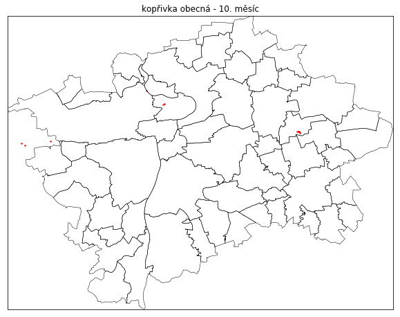
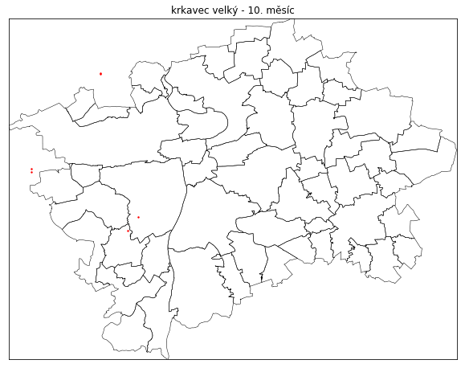
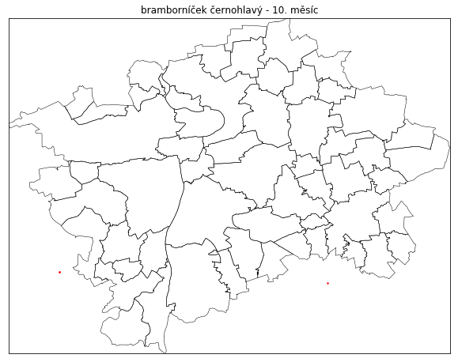
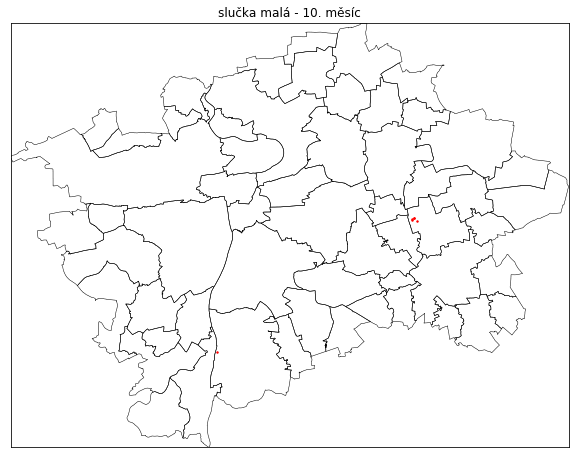
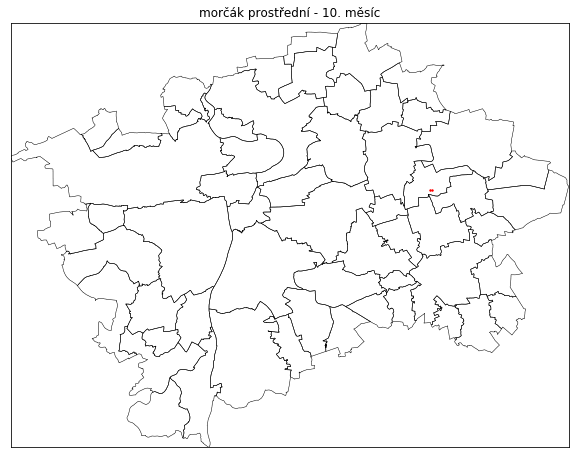

vyrobil datastory, kód volný, použitá data (roky 2013-16) pochází z faunistické databáze AVIF
na stránce můžete hledat kombinací kláves Ctrl + F
kachna divoká
sýkora koňadra
kos černý
slípka zelenonohá
straka obecná

lyska černá
sýkora modřinka

racek chechtavý
labuť velká

pěnice černohlavá
polák chocholačka
holub hřivnáč
volavka popelavá
strakapoud velký
budníček menší
sojka obecná

holub domácí
potápka malá
pěnkava obecná
žluna zelená
červenka obecná
brhlík lesní
polák velký
poštolka obecná
špaček obecný
zvonek zelený

kormorán velký
ledňáček říční
stehlík obecný
strnad obecný
rorýs obecný
vrabec polní
hrdlička zahradní
bažant obecný
mlynařík dlouhoocasý
rehek domácí
střízlík obecný
káně lesní
konipas bílý
kavka obecná
drozd zpěvný
potápka roháč
vlaštovka obecná
havran polní
dlask tlustozobý
rehek zahradní
slavík obecný
jiřička obecná
konipas horský
pěnice pokřovní

čížek lesní
hohol severní
drozd kvíčala
skřivan polní
vrabec domácí
čírka obecná
morčák velký
racek bělohlavý

šoupálek krátkoprstý
pěnice hnědokřídlá
kopřivka obecná

lžičák pestrý
hvízdák eurasijský
břehule říční
krahujec obecný
čejka chocholatá
strnad rákosní
racek bouřní
kulík říční
racek stříbř./běloh./středom.
pěvuška modrá
budníček větší
moták pochop
pěnice slavíková
pisík obecný
králíček obecný
rákosník zpěvný
cvrčilka zelená
kvakoš noční
potápka černokrká
rákosník obecný
kukačka obecná
datel černý
ťuhýk obecný
vrána obecná šedá
drozd brávník

hýl obecný
šoupálek sp.
konopka obecná
sýkora babka
sýkora uhelníček
polák kaholka
strakapoud prostřední
budníček lesní
koroptev polní
husa velká
zvonohlík zahradní
sokol stěhovavý
čírka modrá

rákosník velký
lejsek černohlavý
brkoslav severní
volavka bílá
kachnička mandarinská
sýkora babka/lužní
berneška rudokrká
krkavec velký

vrána obecná černá
zrzohlávka rudozobá
šoupálek dlouhoprstý
králíček ohnivý
vodouš kropenatý
lejsek šedý

bekasina otavní
kalous ušatý
bramborníček černohlavý

hoholka lední
bramborníček hnědý
husice nilská
chřástal vodní
žluva hajní
sýkora parukářka
rákosník proužkovaný
vodouš bahenní
strakapoud malý
sedmihlásek hajní
vrána obecná
puštík obecný
kachnička karolínská
ťuhýk šedý
krutihlav obecný
strnad luční
potáplice malá
skorec vodní
ostralka štíhlá
cvrčilka říční
kachna domácí
bělořit šedý
morčák bílý
polák malý
lejsek bělokrký
ústřičník velký
racek stříbřitý
koliha velká
jestřáb lesní
drozd cvrčala
racek středomořský
pěnkava jikavec
čáp černý
křepelka polní
chocholouš obecný

vodouš šedý
velký netopýr
netopýr
linduška luční
dudek chocholatý
racek bělohlavý/středomořský
bukáček malý
rybák černý
konipas luční
čáp bílý
pižmovka domácí
slavík modráček středoevropský
luňák červený
bukač velký
křivka obecná
husa běločelá
moták lužní
chřástal polní
racek žlutonohý
sýkora lužní
jeřáb popelavý

racek malý
kalous pustovka
volavka stříbřitá
včelojed lesní
sluka lesní
budníček zelený
volavka vlasatá
cvrčilka slavíková
husice liščí
slučka malá

hrdlička divoká
moták pilich
slavík modráček
žluna šedá
linduška horská
linduška lesní
káně rousná
moudivláček lužní
husa sp.
výr velký
poštolka rudonohá
jespák bojovný
potápka žlutorohá
husa polní/tundrová
labuť zpěvná
malý netopýr
orlovec říční
čečetka zimní/tmavá
potáplice severní
rybák obecný
racek černohlavý
konipas bílý evropský
luňák hnědý
orel mořský
pěnice vlašská
turpan hnědý
morčák prostřední

bažant královský
husa tundrová
dřemlík tundrový
konopka žlutozobá
jespák obecný
kulík zlatý
linduška úhorní
andulka vlnkovaná
ostříž lesní
volavka červená
čečetka zimní
čečetka tmavá
berneška bělolící
skřivan lesní
koliha malá
chřástal kropenatý
sova pálená
nutrie říční
alexandr malý
rybák dlouhoocasý
rosela pestrá
holub doupňák
raroh velký

rybák bělokřídlý

linduška rudokrká
lelek lesní
konipas luční středoevropský
rybák bahenní
konipas luční severoevropský
kulík písečný
korela chocholatá
slavík tmavý
strnad zahradní
pelikán kadeřavý
vlha pestrá
špaček růžový
potápka rudokrká
čírka hottentotská

sýc rousný
hýl rudý
turpan černý
káně bělochvostá
ořešník kropenatý
rybák velkozobý
sýkořice vousatá
kulík bledý
orel královský
husa polní /sensu stricto/
orel křiklavý/volavý
lejsek malý
husa labutí
konipas citrónový
kos horský
ondatra pižmová
vodouš rudonohý
jespák malý
vodouš tmavý
tenkozobec opačný
kruhoočko východoafrické
páv korunkatý